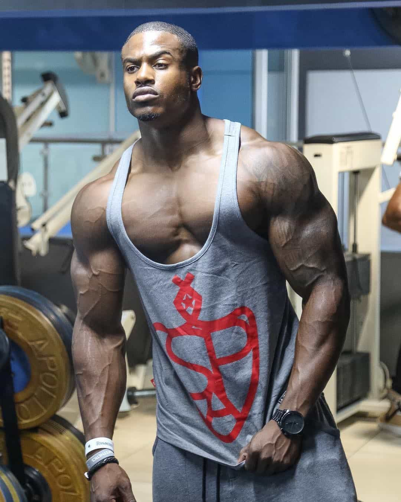

Below are three main factors that largely underlie success with women. One is not enough; a male needs some degree of all of them. These have been identified after 20 years of actual experiences with females, ever since I first made out with a girl as a 12-year-old aspiring Casanova outside of a disco.
I have also observed many other males in my social network, some of which are highly successful and some are the complete opposite, and needless to say also taken into account all the game material on ROK and elsewhere that I have come across. Hopefully this effort can help to identify some of the most crucial factors in order to guide other males and engage discussion.
1. Looks

With looks I refer to the whole spectrum of face, height, body composition, hair, dress style, grooming and hygiene. Although looks are largely influenced by genes, they are also partly malleable.
For instance, a person who is critically short – at least in taller countries such as the Netherlands, UK and Denmark – can use stretching exercises and certain insoles in order to add two inches (one authentic and one inauthentic). With a long-lasting diet and exercise program a person can look like an Olympic athlete. Anyone with a middle income can buy a Calvin Klein suit and cool shoes every now and then.
Looks are also partly contextual, relative and a matter of degree. The short blonde athletic guy in the Netherlands who do not do so well with the local women may be akin to a star in Japan or Colombia. Also within countries there is a lot of variance since the tastes differ.
As for game there is a strong feedback relationship between the inward and outward. With some muscles, low body fat, cool outfits, and even unnatural hair colors, a person can look much better than he would if he did not do all these things in order to maximize his potential. That in turn makes him objectively better-looking in the eyes of most beholders, and he will think that he himself deserves better quality and perhaps also higher quantity of women.
Regardless of which factor that is the most important, how one feels inside or how others look at you, I cannot recall any time that I have slept with anything better than a six or seven when my body percentage has been too high (bulky rather than fat). While looks are not enough as an isolated factor it sure helps to get direct and free access to attractive girls.

2. Confidence
As for the internal and external feedback loops, looks often overlap confidence. The better a person looks, the better the confidence, although that is a half-truth since many decent looking guys have only moderate confidence or in some cases less than that. As with appearance there are seldom any absolutes in this respect but is a question of degree: one is more or less confident. Confidence is perhaps also the factor that more frequently switches on and off and thus is less stable than many other factors. Like VO2 max it has to be almost constantly maintained.
However, it really does matter, for the very simple reason that a guy seldom will be chased down by girls, even if he looks good. He might get more IOIs (Indicators of Interest) than an average-looking person but that is still insufficient. Confidence does also have a strong comparative advantage and therefore to be irrationally self-confident might be a very decisive factor.
Nevertheless, most lays – as well as kisses, phone numbers and dates – stem from confidence. Sometimes it is only a small degree that makes the difference, such as to make a cold approach, call someone after the first encounter (less common these days), or kiss a girl in an appropriate moment, but still one cannot be without it.
3. Determination
The third main factor that I put forward is determination. How many times have you not avoided to approach a girl in a bar, club or in public as a consequence of lack of determination? Surely, this phenomenon overlaps confidence, but it is not enough to explain neither success nor failure in this regard. For example, one can do a lot of things that one is not completely confident to do. When I tried skydiving in Australia I did not feel confident at all but still I did it, because I was determined to do so.
The same is the case with girls. One can feel more or less confident inside, and get more or less external validation from others, but one must still be determined to make an effort, whether small or big. Sometimes it happens almost spontaneously but numerous times one must almost force oneself to make something uncomfortable, such as several cold approaches. But it can often transcend these types of interactions and simply mean to live through hours of bullshit.
For example, I have an ambivert personality and can easily slip into writing, reading, working and exercising and only do some online game before I feel compelled to get back on the wet track after consecutive months of drought. Then I will be much more willing to use for instance Machiavellian cunning in order to be on the score board once again, such as to pretend to be a left-liberal just to pseudo-connect with a Swedish slut that I have little in common with. Always when I feel that I have to perform I am willing to use more of this.
For example, I often imply that I intend to stay longer than a few weeks when I am in Asia so that the girls will not activate their anti-slut defense shields, which will prevent me from increasing my notch count. My current girlfriend is the result of determination, combined with looks and confidence (and other factors).
Furthermore, a lot of the self-improvement efforts are linked to determination. It can be to train six times a week, eat strict, take the best possible photos that you will use online, and buy those clothes and shoes that might make the difference in a highly competitive sexual market. Or be more sociable than you sometimes feel like at a particular moment. It is even more important than the Dark Triad, although it might be the case that your personality profile partly underlies your behavior, including determination. Subclinical narcissism is linked to mental toughness.
The underlying factor in all of these different cases is always determination. Sometimes you are not willing to make much of an effort to get girls, for whatever reason. Perhaps you are already on a roll and do not care for another one, or are not on a roll and have lost track of the efforts that underlie relative game success. Sometimes you lack motivation. Nevertheless, determination is crucial.
Conclusion
As I stated in the introduction, there are a variety of factors involved. At best one can disentangle main factors but even those are seldom more than general predicators for a large share of individuals, not all. Still I think that these three are the most important such, and I myself and my two decades of interactions with the (un)fairer sex – combined with manifold observations of other males – is a proof of that.
Read More: How Achieving A “Pop Star Look” Can Drastically Improve Your Success Rate With Women